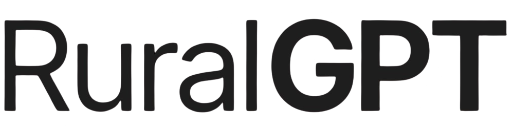

CURSO PARA HACER
UNA WEB
Vais a aprender tips y herramientas que van a impactar en muchas cosas de vuestra vida.
Rural Hackers x AJE Ourense

Vais a aprender tips y herramientas que van a impactar en muchas cosas de vuestra vida.
Rural Hackers x AJE Ourense
Rural Hackers
Dinámica de arranque
Ejercicio físico
Estado inicial
Stack mínimo
Inspiración guiada
Buyer persona
Datos reales
Branding y contenido
Versionado
Plantilla de salida
Manos al teclado
Skills
Cierre comparativo
Cierre final